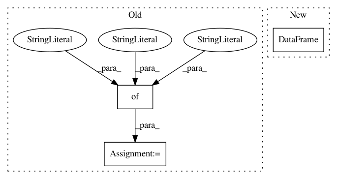

3052e961e54ead28c717b6bbf5c785946e727fa9,finetune/input_pipeline.py,BasePipeline,get_target_input_fn,#BasePipeline#Any#Any#,316
Before Change
batch_size = batch_size or self.config.batch_size
TS = tf.TensorShape
shapes ={
"features": TS([768,]),
"sequence_features": TS([self.config.max_length,768]),
"attention_weights": TS([12,512,512])
}
if self.config.base_model in [GPTModel, GPTModelSmall]:
output_types = {"features":tf.float32, "sequence_features":tf.float32, "attention_weights":tf.float32}
else:
After Change
def get_target_input_fn(self, features, batch_size=None):
batch_size = min(len(features),64)
features = pd.DataFrame(features).to_dict("list")
for key in features:
features[key] = np.array(features[key])
tf_dataset = lambda: tf.data.Dataset.from_tensor_slices(dict(features)).batch(batch_size)
In pattern: SUPERPATTERN
Frequency: 4
Non-data size: 3
Instances
Project Name: IndicoDataSolutions/finetune
Commit Name: 3052e961e54ead28c717b6bbf5c785946e727fa9
Time: 2019-06-20
Author: matthew.bayer@indico.io
File Name: finetune/input_pipeline.py
Class Name: BasePipeline
Method Name: get_target_input_fn
Project Name: IndicoDataSolutions/finetune
Commit Name: bb8cf918f0a6b0f63db15c2fd34f5d314ff51b02
Time: 2019-06-20
Author: matthew.bayer@indico.io
File Name: finetune/input_pipeline.py
Class Name: BasePipeline
Method Name: get_target_input_fn
Project Name: datascienceinc/Skater
Commit Name: 058c79c9653af78184deb94aa3853f8a37eec32a
Time: 2017-03-02
Author: aikramer2@gmail.com
File Name: pyinterpret/core/global_interpretation/partial_dependence.py
Class Name: PartialDependence
Method Name: partial_dependence
Project Name: QUANTAXIS/QUANTAXIS
Commit Name: f9f8d9e847a2c74b9d5234d85532f4c4967b035d
Time: 2018-05-03
Author: yutiansut@qq.com
File Name: QUANTAXIS/QAIndicator/QAIndicator_Dataframe.py
Class Name:
Method Name: QA_indicator_KDJ